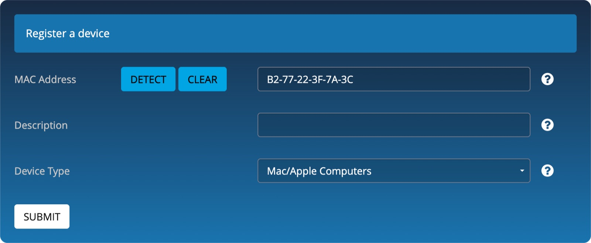

Recap
Before we go wireless — the three things you should have from last class.
Electronics kit
You've received your electronics kit — the parts you'll wire up in class today.
Thonny + MicroPython
Thonny is installed on your laptop and MicroPython is deployed to your ESP32. Setup guide: go.tufts.edu/esp32.
AI-assisted electronics
You can already build basic electronics projects with the help of AI — that's the skill we build on today.
What you'll learn today
Connect, reach out, and build — the three things we do in class today.
Connect to your microcontroller
Reach your device from a phone and from a web browser — no native app needed.
Connect to external services
Give your device internet access, higher data rates, and cloud services.
Build a Smart Light
Put it all together: an RGB light you control from your phone's browser.
Connectivity options
Bluetooth or WiFi — both work, but only one skips app development entirely.
Bluetooth
Low-power, short-range, device-to-device communication — like connecting to a phone app. It requires a native mobile app for user interaction.
WiFi
Internet access, higher data rates, and integration with cloud services. Users interact through a simple web browser interface — no app development needed.
Client, server, or hybrid
Three pieces make the system work: your device, the services it reaches over WiFi, and the browser you control it from.


Build a smart light
One RGB LED — three colors in a single package, sharing a common anode (+).


The prompt
The board & language
ESP32 WROVER, MicroPython.
The component
HC-SR04 distance sensor.
The goal
Measure distance and show it on your phone.
The connection
The Tufts_Wireless open WiFi hotspot.
Register your device
Tufts_Wireless needs your device's MAC address before it will let it join. This is a one-time step.
Get your MAC address
Run the code and copy your device's MAC address from the Thonny console — it looks like 6c:c8:40:77:e0:9c, but with your own numbers and letters.
Expect an error
The rest of the code will fail at this point — you can't reach WiFi yet. That's expected.
Paste your MAC
Clear the default MAC address, then copy your ESP32's MAC from Thonny into the field.


How it works
Every tap on your phone becomes a request the ESP32 answers.
A web server starts
Your ESP32 runs a web server that renders a web page — no separate computer needed.
The page gets an address
The page is accessible at the device's IP address, assigned automatically when it joins Tufts_Wireless.
Your phone renders it
Your phone's browser renders the HTML that the ESP32's web server generates.
Requests round-trip
Interacting with the page sends a request to the ESP32 (e.g. http://10.243.94.14/). It reads the request, calls the sensor, and passes the data back.
Other things to try
Once your device is online, the browser becomes a remote control for anything you build.
Visualize sensor data
A dashboard with temperature history charts.
Control devices from your phone
A virtual joystick to control motors, or a virtual switch to turn something on or off.
Manage settings on the phone
Save them to the device: set a thermostat temperature, or set an alarm clock.
Device state visualization
See the status of an LED (on/off) or the current servo angle.
Student build: browser controls
A photo from a class session — the kind of control page you can build for your own device.

Before you go
Close out the connectivity milestone — then bring what you learned to the Robo Challenge.
Milestone reflection · after connectivity
Complete your reflection for this phase of the course before you leave today at go.tufts.edu/reflect.
Electronics project
Present a working circuit — your AI conversation, a video demo, and a written reflection on the process.